Beauty Expert · Cuneo
Maddy Dabu Beauty Expert, centro estetico a Cuneo
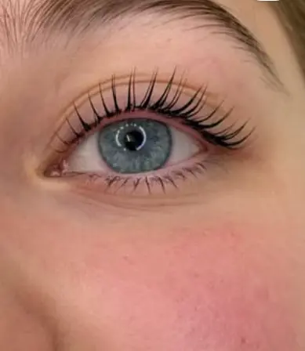
Sopracciglia naturali, pensate per te. Ciglia, sopracciglia e cura del viso nel mio studio a Cuneo.
Richiedi un appuntamento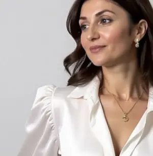
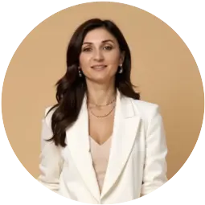
Chi sono
Ciao, sono Maddy.
Nel mio studio in Corso Nizza mi occupo di sopracciglia, ciglia e viso. Lavoro con un'idea semplice: sopracciglia naturali, pensate per te, che seguono i tuoi lineamenti invece di coprirli.
Prima di iniziare ti ascolto, guardo il tuo viso e ti spiego con calma cosa possiamo fare. Accanto ai trattamenti tengo corsi per le professioniste che vogliono crescere.
Scopri i trattamentiTrattamenti
Ogni sguardo ha il suo disegno.
-
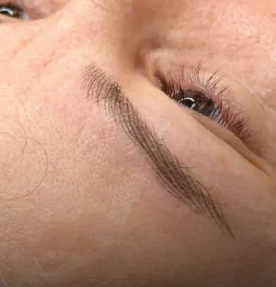
Trucco semipermanente a pelo: tratti sottili che imitano i peli veri, per riempire e ridisegnare senza effetto disegnato.
-
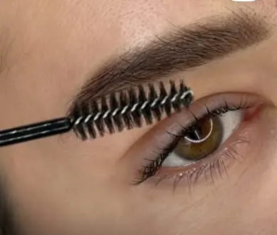
Effetto polvere, sfumato e morbido, come un trucco leggero che resta anche al mattino.
-
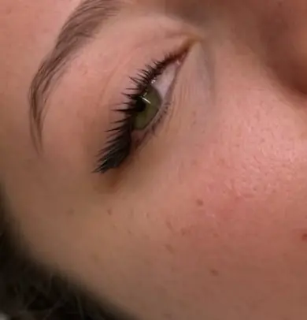
Solleva e incurva le ciglia naturali, per uno sguardo aperto senza bisogno di extension.
-
Pettina e fissa i peli nella direzione giusta: sopracciglia più piene e ordinate, con i tuoi peli.
-
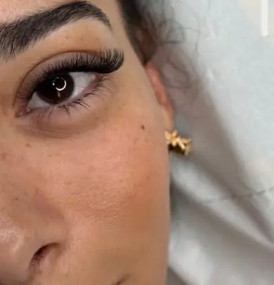
Ciglia applicate una a una, dal naturale al più intenso: l'effetto lo scegliamo insieme.
-
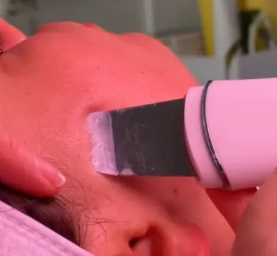
Pulizia e cura della pelle, con trattamenti scelti in base a com'è la tua pelle in quel momento.
-
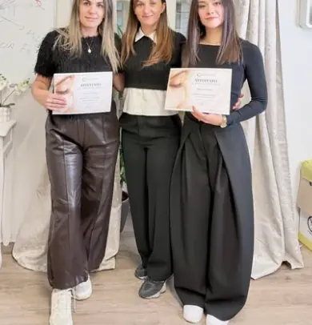
Corsi di laminazione coreana e di extension ciglia, con teoria e pratica su modella.
Guarda i miei ultimi lavori
Ogni foto viene dal mio lettino: sopracciglia e ciglia di clienti vere, senza filtri da catalogo.
Sopracciglia naturali e ciglia curate: un lavoro pensato su ogni viso, mai uguale a un altro.
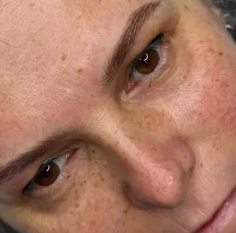
SopraccigliaHairstroke effect 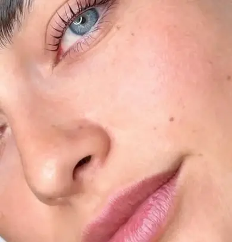
CigliaLaminazione coreana 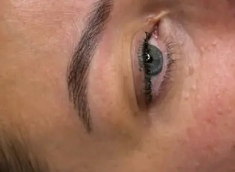
SopraccigliaPelo per pelo 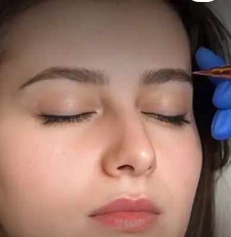
SopraccigliaNaturali, pensate per te Ciglia Extension ciglia 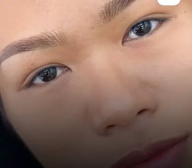
SopraccigliaSguardo ordinato 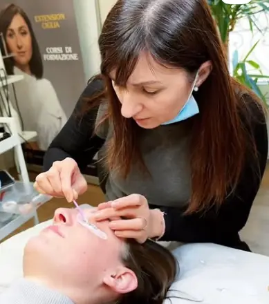
StudioAl lavoro 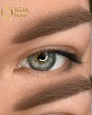
SopraccigliaPowder effect
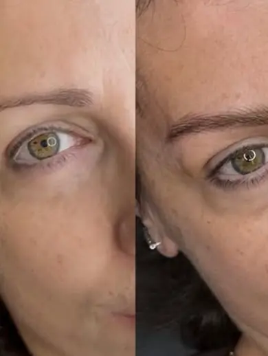
PrimaDopoCome funziona
Tre passi, nessuna fretta.
- I
Mi scrivi
Dal modulo qui sotto o su WhatsApp: dimmi che trattamento ti interessa e quando preferisci venire.
- II
Ti ricontatto
Ti rispondo io, ti faccio qualche domanda e ti propongo un giorno e un orario.
- III
Confermo l'appuntamento
Quando ci siamo accordate, confermo io l'appuntamento. Nessuna prenotazione automatica.
Contatti
Richiedi un appuntamento.
Maddy Dabu Beauty ExpertCorso Nizza 11, 12100 Cuneo
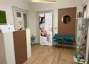
Mappa di Corso Nizza 11, Cuneo